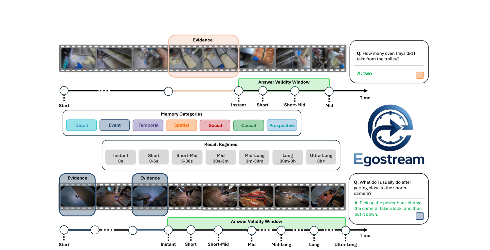

Research paper
EGOSTREAM
A Diagnostic Benchmark for Streaming Episodic Memory in Egocentric Vision
EGOSTREAM asks what models remember, for how long, and when an answer stops being valid as the observed world changes.
Egocentric video
Evidence grounded
Streaming only

Benchmark
Streaming recall, measured carefully.
Ego4D
EgoLife
EgoTempo
Multi-Hop EgoQA
HD-EPIC
Memory dimensions
What, where, when, how, who, why, and what next.
The benchmark organizes questions into detail, spatial, temporal, event, social, causal, and prospective memory.
Detail
Spatial
Temporal
Event
Social
Causal
Prospective
Answer Validity Window
Validity matters.
AVW marks the span during which a past answer remains factually correct, separating model forgetting from natural scene changes.
Recall regimes
From instant to ultra-long.
Questions are evaluated across recall regimes from 0 seconds through short, mid, long, and ultra-long horizons.
Recall regimes
A log-scaled view of memory.
Instant0s
Short0-5s
Short-mid5-30s
Mid30s-3m
Mid-long3m-30m
Long30m-8h
Ultra-long8h+
Protocol
Designed for controlled streaming evaluation.
Curated egocentric sources
Questions are curated from Ego4D Episodic Memory VQA, EgoLife, EgoTempo, Multi-Hop EgoQA, and HD-EPIC.
Query-agnostic streaming
Models process video sequentially and answer using only visual content observed up to the recall time.
4-way evaluation
Performance is measured as multiple-choice accuracy, with breakdowns by memory category and recall regime.
Memory-management testbed
The unified framework compares sliding windows, attention sinks, KV-cache pruning, merging, and offloading.
Current gap
Reliable episodic memory is still open.
Aggregate scores can hide different memory profiles across semantic categories and recall horizons.
Token pruning better preserves detail and temporal structure, while quantized offloading helps ultra-long recall.
Top-performing mechanisms remain around a 45% ceiling and operate below real-time.